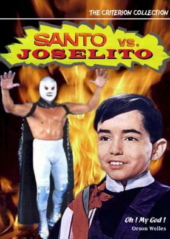

El Santo
 De: La Frikipedia, la enciclopedia extremadamente seria.
De: La Frikipedia, la enciclopedia extremadamente seria.
De la serie grandes personajes:
| Nacimiento
|
1917
|
| Muerte
|
¿1984?
|
| Ocupación
|
Luchador pofesional, detective, espía, científico, actor, dentista, taquero, tortero, y mil cosas más.
|
| Nacionalidad
|
Mexicano
|
| Malo o bueno
|
Bueno siendo malo, malo siendo bueno.
|
| Atentados contra la humanidad
|
Una que otra película
|
| Religión
|
No tiene tiempo, mientras lees esto, el esta investigando algo
|
| Notas
|
No confía en nadie, y con justa razón. Su mascara es plateada
|
Luchador de tarde, super heroe de noche y hacia peliculas los fines de semana y dias festivos
 Promo: El Santo contra Joselito: El Santo siempre combate medio
mal Detective privado de asistencia pública, espía, luchador profesional, y lo que te puedas imaginar. Icono de la Lucha libre mexicana que tiene un origen oculto. Ha estado interfiriendo de manera discreta con la historia de la humanidad, (al lado de Forest Gump). Su origen semi-místico lo predispone para cambiar al mundo tal y como le conocemos. Ha estado a punto siempre de grandes Cross overs como con Chuck Norris.
Origen
Hubo una explosión de rayos solares en la superficie del sol Durante la noche, estos rayos fueron hasta el infinito hasta el cometa Haley, luegon rebotaron en Plutón y fueron a dar en la estrella de la muerte haciendo el famoso agujerito que Palpatin (en ese tiempo capitán de esa nave) no quizo reparar. Estos rayos rebotaron en Jupiter a 0° y fueron a parar en Austria donde por un toque de suerte Hitler Reflectó con un espejo,(hecho que lo hizo pensar en que podía ser el emo rey del mundo) hacia la admósfera de tal modo que rebotaron entre la superficie terrestre hasta dar en una arena de Box y lucha. Cuando cayó el rayo en dicho lugar se formó una esfera de energia que hacia inutilizable el ring hasta que un sagaz intendente, tocó la esfera y se formó el campeon de los débiles, el idolo de todos los que se dejen EL SANTO
Relaciones Sociales
Son tantas que solo se mencionarán:
- Grandes Aliados: Capitán America, Capitan Europa, Capitan Marvel, Capitan Cavernícola, Captain Crash and the Beauty Queen from Mars (este dúo lo presentó Bon Jovi en su fiesta salvaje llamada Crush), Blue Demon, Su máscara propia suya
de él del santo.
- Grandes enemigos: su publicista, el nieto del Dr. Frankenstein, la hija del Dr. Frankenstein, el Dr. Frankenstein, Drácula, Batman, Superman, el guionista de sus películas, departamento de Hacienda y tu(pues no confía en nadie, omitiendo, claro a sus aliados).
Grandes Aventuras
- Santo contra el cerebro del mal: demostraba los perversos planes de María Félix para Dominar el Mundo.
- Santo contra hombres infernales: Luchó contra unos
homosexuales hombres infernales y misóginos (no eran gallegos ó judios).
- Santo en el hotel de la muerte : Su faceta de detective lo llevó a un bule muy peligroso de la ciudad de México de donde salió victorioso (con una deuda de $30000 100/MN, o E2000 ).
- Santo contra el cerebro diabólico: los perversos planes de María Félix para Dominar el Mundo - versión extendida.
- Santo vs.las mujeres vampiro: Chicas ca
lienndentes que querían la liberación femenina conquista del mundo.
- Atacan las brujas: en su faceta de espía entra al cine y ve la película de las Spice Girls.
- Operación 67: (el nombre real era operación 69 pero por
Cuestiones de moral la falta de presupuesto fue a lo más que llegó. Este documental era una amplia explicación de las urracarranas actuación especial de Blue Demon)
- Santo en la venganza de las mujeres vampiro: Desconfiando del hecho de que halla acabado con las Spice girls busca acabar con el plan más grande del regreso de estas damitas, evitando la propagación de la pelicula TRIUNFOS ROBADOS XXVI " no me bajes al novio
¡perra!"
- Santo en la venganza de la momia: En su faceta de Arqueologo se una a la lucha de Brendan Fraiser por evitar la resurrección de Inmotep, por VI vez (Que mola).
- Santo vs. la hija de Frankenstein: Reveladora resurrección de Marilin Monroe, a quien el mundo creía muerta, y luego resulta ser la hija perdida y alocada de Dr. Frankenstein, pero corregida y "aumentada".
- Santo contra la magia negra: en su faceta de espía lucha contra el Vudú (que compró en EE.UU) película que inspiro la canción "mujer de magia negra" de santana.
- Santo en el tesoro de Drácula: Cross over con Batman Donde unen sus fuerzas para acabar con el conde Drácula, pero lo que nadie supo es que después se pelearon a muerte los dos sobrevivieron.
- Santo en el misterio de la perla negra: Por la excesiva y compulsiva manía de comprar tecnología y la corruptela del gobierno mexicano, además de las multas de la organización de telecomunicaciones mexicana (Cofetel) por usar espectro electromagnético (que ironía) El santo se quita la máscara, se viste de pirata, se hace un tatuaje curioso y cambia su nombre por el de Juan Guajolote. Con esta serie de cambios se hace a la mar, para buscar, primero un barco y después un tesoro
o irse de inmigrante ilegal a EE.UU.
Super enfrentamientos
- Santo contra Batman: Nadie supo el final de esta pelea porque la transmisión de la pelea fue suspendida por el partido Mexico VS EE.UU. en el mundial de Corea Japón 2002.
 Mēxihco Mēxihco
|
Estados Libres y Soberanos Pero Igual Subordinados
Ciudades, Localidades y Ejidos
El Mundo del Espectáculo, la Farándula, Luminarias y otras Vergüenzas
Tribus Urbanas Nacionales
Historia y su Rara Cultura
|
 Lucha Libre Lucha Libre 
|
 Luchadores Luchadores 
 Empresas Empresas
 Estilos de Lucha Estilos de Lucha
 Otros Otros
|
Autor(es):
- Tako
- Roms
- Nadaquever
- Diego05
- Fallen Angel
- Cibercrank
- Hoffmaneitor
- ArreKarallo
- Veni Vidi Vici
- Zetsubou D
Frikipedia 2005-2016, Licencia
GFDL 1.2 - Extraído por FrikiLeaks